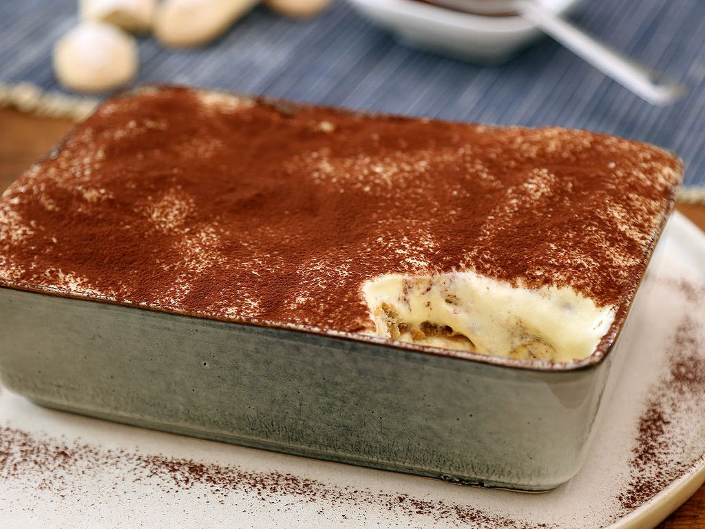

Tiramisu recipe !

Tiramisu, meaning "pick me up" in Italian, is a luxurious dessert with roots in the Veneto region of Italy. Believed to have originated in the 1960s, it quickly became a worldwide sensation thanks to its creamy layers, bold coffee flavor, and hint of cocoa.
Made with mascarpone, coffee-soaked ladyfingers, and a touch of liqueur, tiramisu strikes the perfect balance of lightness and indulgence.
Its no-bake preparation and versatility have solidified its place as one of the most cherished desserts in Italian and international cuisine.
Ingredients (serves 6-8):
- 300 g mascarpone cheese
- 3 large eggs (separated)
- 75 g granulated sugar
- 300 ml strong espresso or coffee (cooled)
- 2-3 tbsp coffee liqueur (e.g., Kahlúa or amaretto; optional)
- 200 g ladyfingers (savoiardi)
- Cocoa powder for dusting
Instructions :
- Prepare the creme base :
- In a bowl, whisk the egg yolks and sugar until pale and creamy.
- Gently fold in the mascarpone cheese until smooth and well combined.
- Whip the egg whites :
- In a separate bowl, beat the egg whites to stiff peaks. Gently fold them into the mascarpone mixture to create a light and airy texture.
- Prepare the coffee mixture :
- Mix the cooled espresso with the coffee liqueur in a shallow dish.
- Assemble the tiramisu:
- Dip each ladyfinger briefly into the coffee mixture (do not soak), then layer them in a rectangular dish.
- Spread half of the mascarpone mixture over the ladyfingers. Repeat with another layer of dipped ladyfingers and the remaining mascarpone mixture.
- Chill :
- Cover the dish and refrigerate for at least 4 hours (preferably overnight) to allow the flavors to meld.
- Finish and serve :
- Dust the top with cocoa powder and garnish with chocolate shavings if desired. Slice and serve chilled.
Tiramisu is the epitome of Italian elegance—simple yet sophisticated, making it a perfect dessert for both everyday indulgence and special occasions.
And my sister loves it.